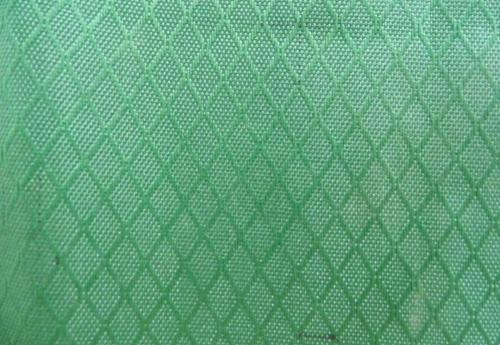

 吴江市文教牛津布厂成立于1985年，前身为校办企业， 2003年转制成为民营企业，该厂自1991年起生产牛津布，是全国最早生产牛津布的厂家之一，也是现在吴江地区为数不多的专业生产高档牛津布的厂家，被业界誉为精品牛津布研发“专家”。
张克成，吴江市文教牛津布厂厂长，说他是厂长不如说他是这个厂的领路人。在企业转制时留下的就仅仅是一笔难收的应收款和卖不出去的库存产品的情况下，原本作为教书匠的他没有退缩，也没有放弃，而是勇敢的接过这个摊子，引领企业进行艰苦创业。现在回忆起来，他都在为自己的当初的选择捏了一把汗，“当时的情况只能用‘困难’来形容” 张克成回忆说。
谈到这段艰苦的创业的历程，张克成很是激动，他说：“我们厂在转制不到5年的时间里，成功实现了从一个缺技术、缺资金、缺客源‘三缺’的烂摊子到现在成为‘专家级’生产商的重大转变，这都缘于我们企业始终对牛津布的专注和专一”。
在采访中，张克成给我们讲了一个生产缝纫针的企业的成功故事，说这个企业专门生产各种规格缝纫针并将其产业化，终于获得了行业的认可并获得巨大的经济效益。他说，小小的缝纫针虽看着不不起眼，但是只要把他当成产业来做就有很大的商机。正是受此启发，我们选择了牛津布，一直专注于牛津布，并提出了“向牛津布纵深拓展”的发展思路，就这样，无论是成立以来还是改制以后，公司一直集中精力致力于牛津布的研究、开发，面对市场上出现的具有超诱惑的面料我们也会“无动于衷”。正是依靠这种专注和专一精神，现在文教牛津布厂已能生产各种规格的涤纶长丝、弹丝牛津布。产品以覆盖了所有牛津布系列，包括1800 D、2400D、3000D等高规格产品都有涉猎。另外，公司生产的色织牛津布堪称一绝，无论是产品规格和花型都足以引领盛泽市场高档牛津布潮流，该产品大规模的被应用在箱包、帐篷、沙发里面料、沙滩服装及特种服饰，成为文教牛津布厂近年来的主要经济增长点。
尽管现在的企业比转制时发生了翻天覆地的变化，但张克成并没有满足。自去年以来纺织业面临人民币升值、成本上升等诸多困难的情况下，很多企业多持观望态度，不敢进行大刀阔斧的改革，而张克成却在企业并不富裕的情况下作出了一个惊人的决策，他要斥巨资和浙江一家企业合作开发一种5公斤的加捻车，据了解，该加捻车已在文教牛津布厂投产投产调试中。“目前盛泽市场一般都使用的0.8—1公斤的加捻车，如果5公斤的加捻车的成功投产不但可以填补盛泽市场国产5公斤加捻车的空白，还能很大程度提高机器的生产效率和产品质量，从而提高企业产品附加值”张克成说。除此之外，他还大胆的在厂里进行技术改造，据他介绍，厂里自主改造的“喷水三喷”技术已经相当成熟，“喷水四喷技术”也正在研究中。
在加强企业硬环境建设的同时，张克成同样没有放松过企业软实力的建设，“拥有最先进的技术并不一定能占领最广大的市场”。张克成认为，信誉是企业长久生存的根本，比什么都重要。无论你有多先进的技术，多好的产品，如果没有诚信的经营是无法长久立足的。于是 “要学会经商，先学会做人”便成了张克成及企业时刻践行的口头禅。在采访中他还不时的透露，现在有些企业为了谋取一时的利益往往在生产中偷工减料，这样一来生产产品原料少了，价格就低了，于是价格成了企业竞争的筹码。“这样不但会给我们这些做‘老实’生意的人带来很大冲击，而且还会造成整个社会的信誉危机” 他说，“诚信不但是单个企业最大的财富，也是一个地方的财富”。对于盛泽纺织业的发展前景，张克成认为，盛泽纺织人在当前不利发展的大环境下，企业在提高产品竞争力的同时应将企业诚信建设提到新的高度，只有这样才能使盛泽纺织企业在激烈的竞争中始终立于不败之地。